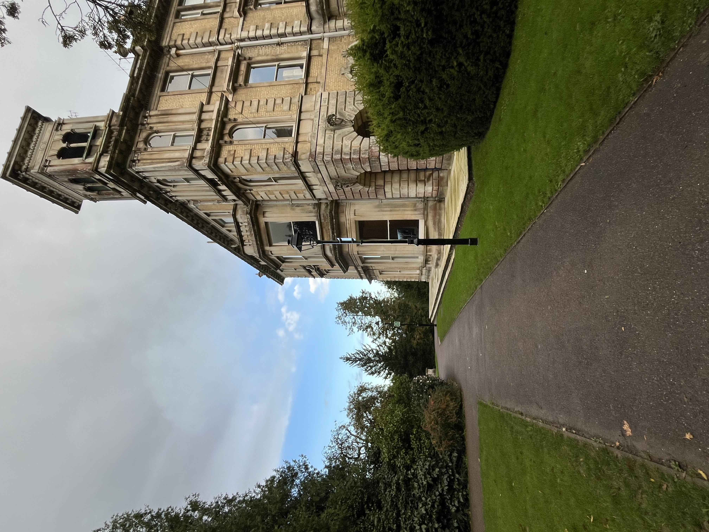
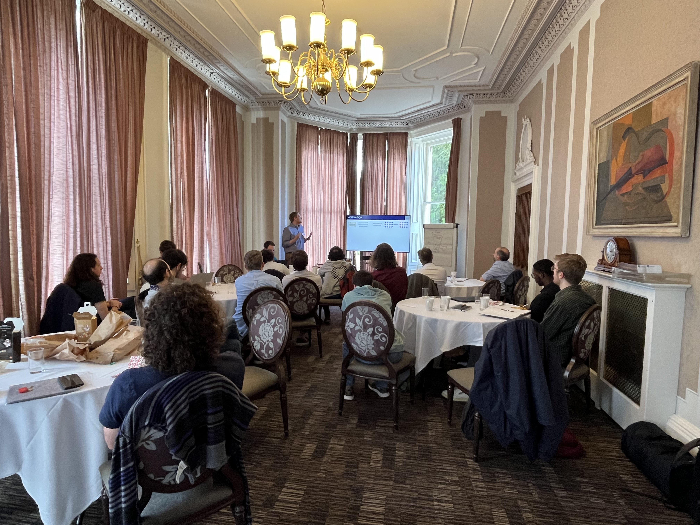
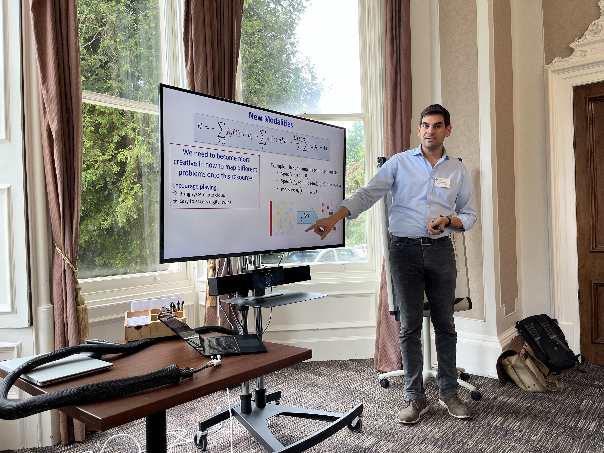
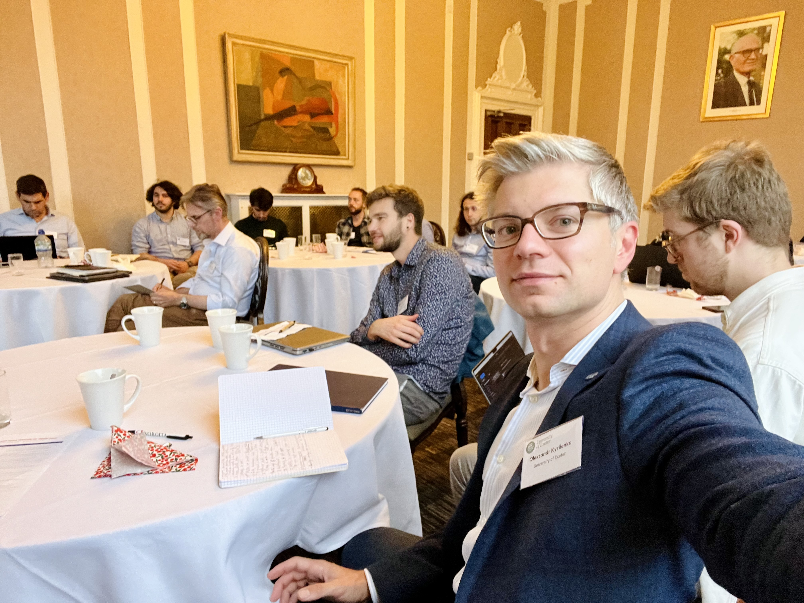
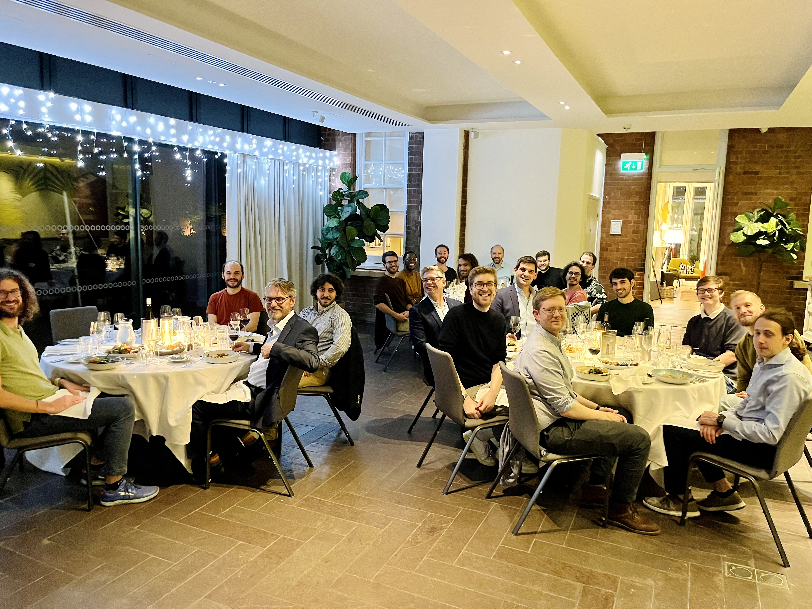
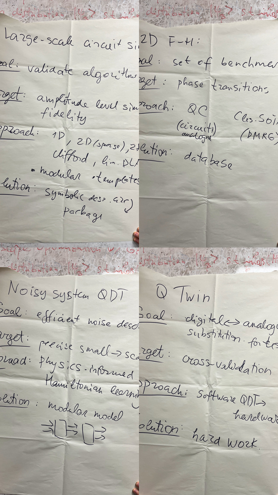

We set out this workshop with a distinct mission: to brainstorm how we can bridge the gap between the evolving quantum hardware platforms and the software needed to support their full potential...
     To tackle this challenge, we assembled a multidisciplinary group of experts at the historic Reed Hall in Exeter...
Key Highlights
Day One: The first day culminated in a roundtable discussion, exploring the application-specific nature of QDTs...
Breakout Teams and Their Focus
- Algorithmic Development and Testing: This team concentrated on large-scale circuit simulation which is noiseless...
- Quantum Simulation of Condensed Matter: Driven by applications, this team suggested addressing models like the Fermi-Hubbard...
- Advanced Noise Modelling: The focus was on noisy system emulation and model building...
- Modular Hardware Integration: This team explored merging different hardware platforms to create versatile quantum twins...
And as we wrap up this first chapter, the journey continues towards establishing QDTs as a useful tool...
words by Oleksandr Kyriienko